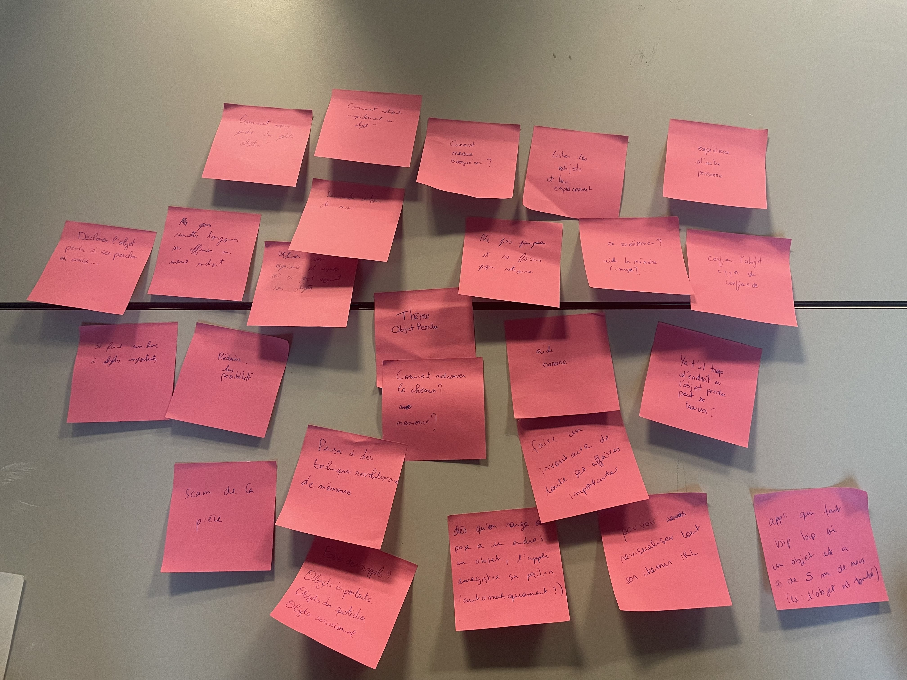

L'idée de notre projet se porte sur la thématique des objets perdus
Interview par Kim Saïdi
Interview 1 Interview 2Interview par Malo Thomasson
Interview 3 Interview 4Interview par Rayan Perotti-Valle
Interview 5 Interview 6Interview par Saad Mousstaid
Interview 7 Interview 8Scenario n°1
Elio a un examen très important pour valider son semestre, il ne doit surtout pas être en retard. Avant de partir, Elio se rend compte qu'il ne trouve plus sa carte navigo, il en a besoin pour prendre le train et ne pas arriver en retard. Il aimerait bien retrouver rapidement sa carte afin de partir. Le système lui montre la position de sa carte.
Scenario n°2
Loma passe ses journée à la pêche depuis qu'il est à la retraite, il aime pas ça mais il y a que ça pour passer le temps. Tous les jours, il doit emporter beaucoup d'affaires avec lui pour la pêche, son ancien lui se demande comment il fait pour ne rien perdre, lui qui égarait tout avant. En vrai, il oublie tous les jours sa canne à pêche sur le pas de la porte mais le système lui rappelle de la prendre, c'est mieux plus simple de pêcher avec une canne à pêche que sans.
Elio
"... où est-ce que j'ai mis mes écouteurs encore..."
- 23 ans
- étudiant en L1 informatique
- habite en banlieue parisienne avec ses parents
Elio est constamment en proie à la perte de ses affaires, faisant preuve d'une grande distraction. En moyenne, toutes les deux jours, il perd au moins 10 minutes à les chercher. Bien qu'il parvienne toujours à les retrouver, il ne montre aucun effort pour s'organiser plus efficacement.
Baros
"Bien sûr que je sais où se trouve mon passeport ! Deuxième étagère du bureau avec tout mes autres documents important."
- 36 ans
- A fait des études de droit à l'Univeristé de Bordeaux
- habite à Bordeaux, dans le centre ville avec sa femme et son fils
Baros est une personne qui perd très peu ses affaires. Il est très organisé et range tout le temps ses affaires au même endroit.
Loma
"Un jour j'ai même failli oublier un élève à l'école pour une sortie scolaire ! Depuis je fais beaucoup plus attention..."
- 74 ans
- Retraité, vis avec sa femme en Bretagne dans le Morbihan
- A été professeur d'histoire au collège
Autrefois, Loma perdait fréquemment ses affaires, mais il a su tirer des leçons de ses erreurs. Désormais, grâce à ses méthodes développées, il perds très peu ses affaires et démontre une grande organisation pour les retrouver rapidement.
Prototype vidéos
Prototype : Inventaire + Mode bip
Prototype : Mode scan
Prototype : Mode POV
Prototype : Mode refaire le chemin
Notre premier Brainstorming
Idées folles
- Les objets ont des pieds et reviennent tout seul si ils sont perdus.
- Des lunettes visions qui recréent nos mouvements pour qu'on puisse revoir où on a mis nos affaires.
- On peut se mettre à la place de l'objet et voir ce qu'il voit